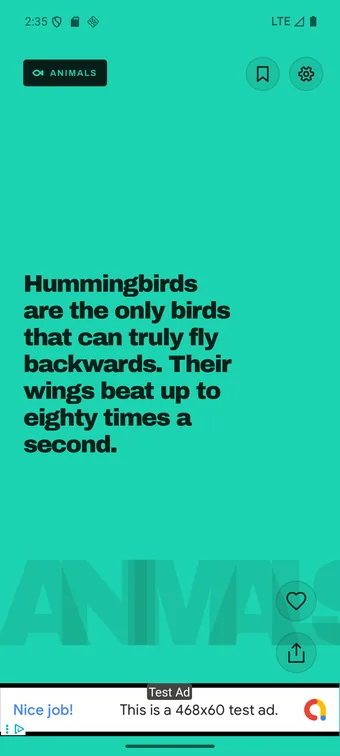
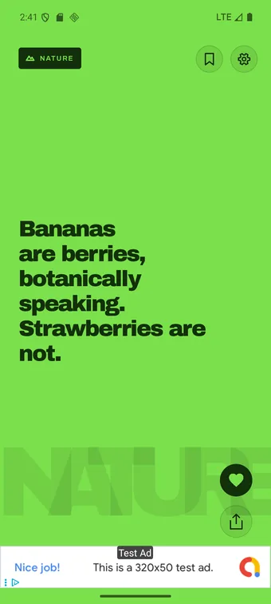
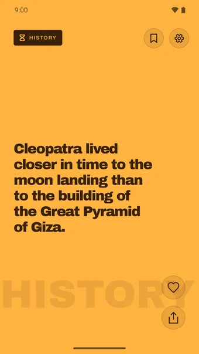
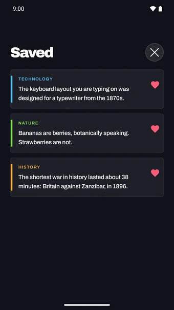

About FactFlow
You know the feeling: you open a short-video app for one clip and put the phone down forty minutes later with nothing to show for it. FactFlow borrows the part that works — one thing per screen, swipe up for the next — and leaves out the part that does not. Every card is a single fact you can actually keep.
The whole app fits in your pocket without a connection. All the facts ship inside the app, so it works in the metro, on a plane and in the queue at the supermarket.
Genuinely offline
Every fact is stored in the app itself. There is no server, no account and no sign-up. The only thing that needs a connection is the advertising; the facts never do.
You see new things first
The feed does not shuffle blindly. It shows you what you have not read yet before it repeats anything, and it spreads the subjects out, so you never get five cards about space in a row.
Every fact has a source
Tap a fact to see where it comes from. Most short-fact feeds ask you to take their word for it; this one lets you check.
Keep the good ones
Tap the heart to save a fact, and find it back in your saved list whenever you want it. Saved facts stay on your device.
Share as an image
Send a fact to someone as a proper card, not as a screenshot of your phone with the battery icon still on it.
Fact of the day
Turn on one notification a day and the fact is right there in the notification itself. No "come back!" — you get the thing, and you open the app only if you want more.
Eight subjects
- Space, Animals, The human body, History
- Nature, Technology, Language, Food
And more
- Available in English and Dutch
- Haptic feedback as each card clicks into place
- Start over whenever you like: clear what you have seen and everything is new again
- No accounts, no in-app purchases, no dark patterns
Free to play; no purchases or accounts required.
Legal
Below you can find the legal documents that apply to FactFlow.
Contact
Questions, feedback or privacy requests? Reach out at joostmuijsenberg.dev@gmail.com.
Spotted a fact that is wrong? Tell us and we will correct or remove it.